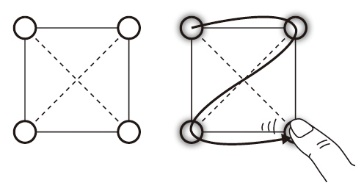
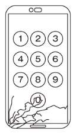

Section 1 — Visual Digest
ひと目でわかる おさらい
パターンロック・パスコード・チェーンメールの拡散を題材に、起こりうる場合の数を順序立てて数え上げる。1章で扱った情報セキュリティと情報モラルの題材を、具体的な計算で確かめます。
本ステップで扱うのは、共通テスト「情報I」で頻出する場合の数の3つの出題パターン。① 積の法則(各ステップの通り数を掛ける)、② 順列(さらに重複なし/重複ありで挙動が変わる)、③ 指数増加(チェーンメールのねずみ算)。いずれも数学的には「各段階の通り数を掛け合わせる」という積の考え方を含む。最後に対概念の 和の法則(場合分け)も補足する(モジュール 07)。
ある操作を複数のステップに分け、各ステップで選べる数が順に決まるとき、全体のパターン数は各ステップの場合の数の積になる。前の選択によって候補そのものが変わっても、各段階の通り数(例: 10 → 9 → 8 → 7)が決まれば掛け合わせてよい。これが場合の数の最も基本となる考え方。
「同じものは2回使えない」「一度通った点に戻れない」のような制約があると、各ステップで選べる数が 1 つずつ減っていく。これが順列(\(_nP_r = n(n-1)(n-2)\cdots\))の本質。
同じ題材でも「重複OK」と「重複NG」では数が大きく変わる。パターンロックの例題③④がまさにこの対比。
パターンロック②③ ・ パスコード(全違い)。前の選択が次の選択肢の数を 1 ずつ減らす(順列 _nP_r)。
パターンロック④。各移動で 「今の点以外の3つ」 から選べるため、毎回 3 通りに分岐する(積の法則: 4 × 3³ = 108)。
パスコード問題(2)で問われるのが「0が壊れたらパターンが何%減る?」。割合の計算は、失った部分と元全体の比で出す。
1人が4人に転送し、その4人がそれぞれ4人に転送する……これは等比数列(初項 4・公比 4)。回数を重ねるごとに4倍ずつ増えるため、見た目は穏やかでも数回でいきなり大きな数に達する。
本問では 積の法則(各ステップを掛け合わせる)が中心だが、その対概念に 和の法則がある。同時に起こりえない複数の場合(排他的)に分けたときは、各場合の通り数を 足し合わせる。共通テスト「情報I」では、積と和の使い分けが頻出。
次の先輩と後輩の会話文を読み、ア〜カに当てはまる数字を答えよ。
後輩: 先輩こんにちは。その画面(図1)何ですか?
先輩: ああ、これは大事な情報を守ってくれるアプリの画面で、パターンでロックを解除できるんだよ。

図 1: パターンによるロック解除の画面と操作イメージ
後輩: 点と点を一筆書きみたいになぞるやつですか。
先輩: そう、このアプリの場合、① 四隅すべての点を好きな順路でなぞるタイプなんだけど、一度通った点には戻れないんだ。
後輩: なんかすぐ破られそうですね。
先輩: ② 左上の点から始めたらパターンは何通りあると思う?
後輩: え~っと、ア 通りですよね。
先輩: そう。あとは ③ 始める点はどこからでもいいので…。
後輩: なるほど、そうやってすべてのパターンを求めると イウ 通りってことになりますね。一度通った点に戻れるとしたら、パターンまた増えそう。
先輩: ④ 一度通った点に戻ってもよいルールで、今いる点からほかの点へと 3 回動いて延べ 4 点を通るなぞり書きをするとしたら エオカ 通りだね。(2022 年 大学入学共通テスト追試験「情報関係基礎」改題)
②「左上から始めると?」 → ア通り / ③「始める点はどこでもいい」 → イウ通り
同じ点に戻ってもよいが、ほかの点へは必ず移動する(止まらない)。
左上を1番目と固定すると、残りは 3点。2番目はその3点から選ぶので 3 通り、3番目は残った 2 通り、4番目は最後の 1 通り。
3 × 2 × 1 = ア = 6 通り
始点は4点のいずれでもよいので、4通り。各始点から ア = 6 通りずつあるので:
4 × 6 = イウ = 24 通り
始点は4通り。今いる点からは「他の3点」へ自由に移動できる(同じ点に戻ってもよい)。3回の移動それぞれで 3 通りなので、独立な選択として:
4 × 3 × 3 × 3 = 4 × 27 = エオカ = 108 通り
原本「考えて納得!」の文字記号と数値の対応:
A = 3, B = 3, C = 2, D = 1, E = 4, F = 4, G = 3, H = 27
A は「左上以外で残っている点の数」、B〜D が「2番目・3番目・4番目の通り数」、E は Step2 の始点数、F は Step3 の始点数、G は「他の点へ動く 1 回ぶんの通り数」、H = G × G × G。
使うたびに残りが −1。一度通った点には戻れない制約。
同じ点に戻ってもよい(ただしその場には止まらない)ので、毎回 3 通り。
あるスマートフォンは、0 から 9 までの 10 種類の数字を組み合わせて、4桁のパスコードを設定することで画面をロックできる。ただし、4桁のパスコードはすべて異なる数字で構成される必要がある(0123 や 9876 は OK、0101 は NG)。次の ⑴ ⑵ に答えよ。

「何%損失したか」は (元 − 残り) ÷ 元。「何%残ったか」は残り ÷ 元。問題文がどちらを問うているかで答えが大きく変わる(60 vs 40)。読み違いに注意。
また、もし各桁の選択肢が同じ比率で減る(各桁とも 10 → 9 通り)なら、全体は (9/10)⁴ = 0.6561 倍 → 損失率は 1 − 0.6561 = 0.3439 ≒ 34.4 % となる。本問はこれと違って 各桁の選択肢が 1 ずつ異なる(10/9/8/7 → 9/8/7/6)ため、上記とは計算式が異なる点に注意。
次の父と娘の電子メールに関する会話の空欄 ア と エ に入れるのに最も適当なものを、後の解答群のうちから一つずつ選べ。
娘:さっき友達から、「拡散希望」っていう件名の電子メールが届いたんだ。テレビ番組の企画で、メールの転送を繰り返してどれだけ広い範囲に伝わるかっていう実験なんだって。…面白そうだから、友達に転送しようかな。
父:ちょっと待って。転送してはだめだよ。それは ア メールだね。ア メールでは、偽情報を拡散させようとしていることが多いんだよ。ほかにも イ とか、ウ ということもあるよ。
娘:情報が正しいかどうか確認するためにその番組の公式 エ を見てみるね。あれ、「当番組の企画をかたった ア メールにご注意ください」って書いてある。転送しないでよかった。
解答群のうち、似た文脈で出てくる用語を整理しておく。
前問(練習 2)と同じ会話の中の空欄 イ・ウ に入れるのに最も適当なものを、後の解答群のうちから一つずつ順不同で 2 つ選べ。
父:ちょっと待って。転送してはだめだよ。それは ア(前問の正答: チェーン)メールだね。ア メールでは、偽情報を拡散させようとしていることが多いんだよ。ほかにも イ とか、ウ ということもあるよ。
前問(練習 2・3)と同じ会話の続き。空欄 オカ・キ・クケコサ に当てはまる数字を答えよ。
父:それにね、正しい内容だったらいいってわけではないんだよ。どのメールアドレスに対してもそれぞれ 1 人にメールが届くとして、最初にチェーンメールを始めた人が 4 人のアドレスを宛先にしてメールを送ったときを 1 回目とするよ。2 回目に、宛先で受け取った 4 人がそれぞれ 4 人に転送したとすると、担当者を除くと最大 16 人にメールが送られることになるよね。3 回目に、その 16 人がメールを転送したとすると、担当者を除くと最大 オカ 人にメールが送られるよ。そうすると キ 回目では、担当者を除いても最大 1 万人以上に送られることになるんだ。そして、2 回目から キ 回目までに CC にある担当者に送られるメールを合計すると最大 クケコサ 通になるよね。
「送信者の数 = その回に CC で担当者に届く通数」。1 回目の送信者は最初の本人 1 人だけなので CC は 1 通だが、本問は 2 回目から 7 回目までを合計する設定。各回の送信者数は「前の回の受信者数」と一致する。
等比数列の和の公式 a(rⁿ−1)/(r−1) でも計算可能。a=4, r=4, n=6 なら 4(4⁶−1)/(4−1) = 4 × 4095/3 = 5460。
視覚の落とし穴: 1〜4 回目までは棒がほとんど見えない(線形目盛では値が小さすぎる)。6 回目 (4096) でも 1 万人ラインに届かず、初めてラインを越えるのは 7 回目 (16384)。指数増加は「見た目は静か → 急に爆発」する性質を持つことに注意。